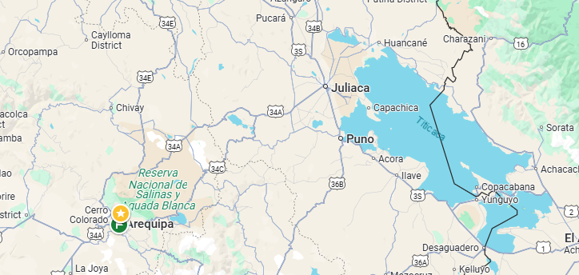
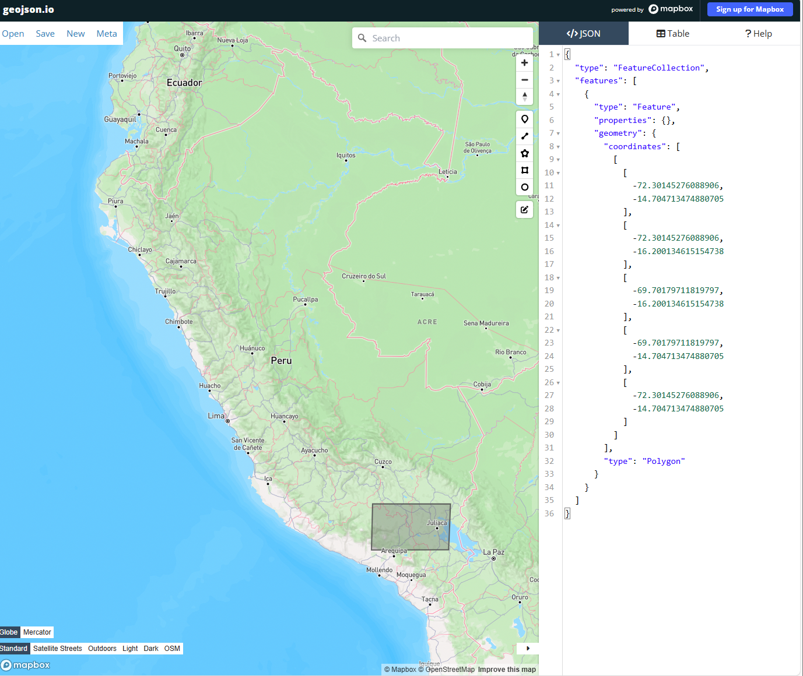
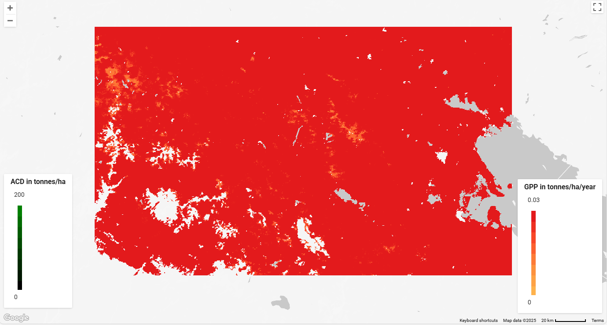
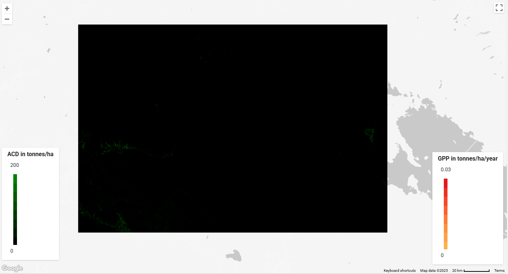

Carbon Sequestration
 I chose an area near the south of Peru, to the west of the department state of Puno. This area contains the National Reserve of Salinas and Aquada Blanca
Gross Primary Production (GPP): GPP is the rate at which atmospheric carbon dioxide (CO2) is fixed by photosynthesis. It is considered the dominant carbon (C) flux from the atmosphere to the terrestrial biosphere. Therefore higher GPP = higher level of carbons sequestration
Aboveground Carbon Density (ACD): Represents the carbon stock attributes, specifically the spatial variation in aboveground biomass of vegetation. It measures the amount of carbon stored in the vegetation above the ground.
- ACD is a reference variable critical for monitoring the status of forest ecosystems. Accurate information on carbon stock attributes is essential for characterizing a site's carbon sequestration potential. Its estimation is supported by methods like airborne laser scanning
-
Funnily enough, there is already a conservation area where there is the highest aboveground carbon density! This is the National Reserve for Salt Mines and the White Aquada. It is almost pitch-black for ACD because of no density, and lighter values are only near the national reserve. I’m glad that this is protected, then!
Still, I would expand the protection to start further north, going closer to Chivay. We miss a lot of vegetation protection that aids in keeping carbon levels.
This exercise allowed me to understand how this processing of satellite data allows for efficient evaluation for conservation.